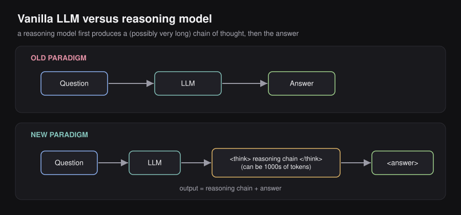
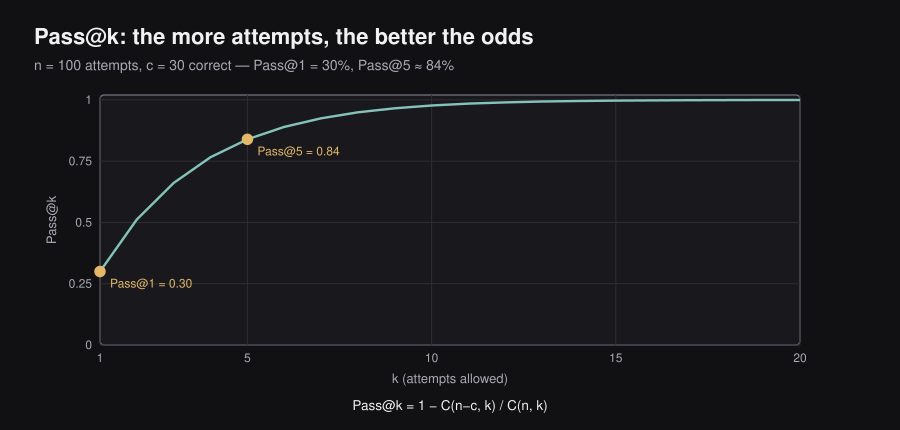
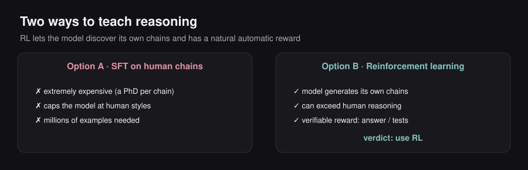
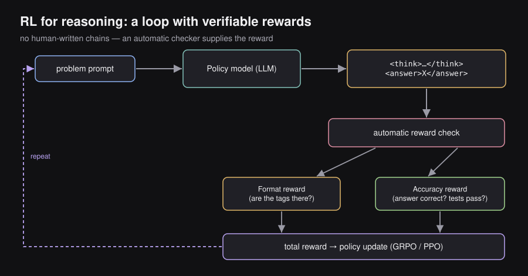
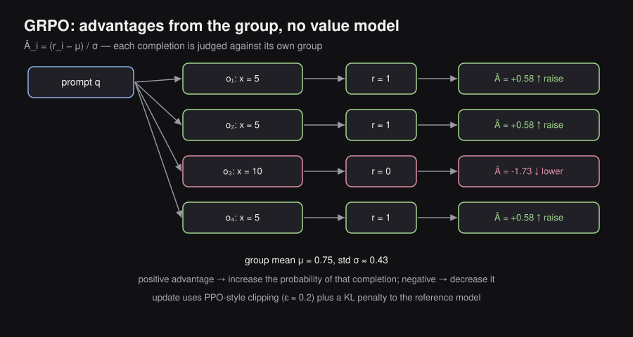
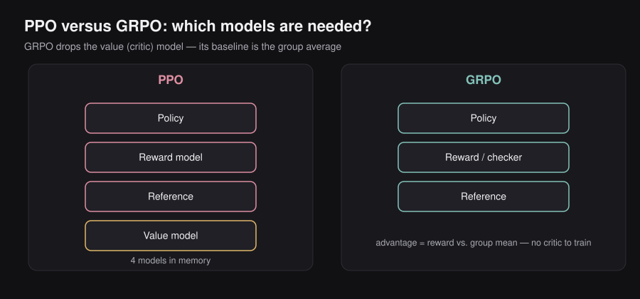
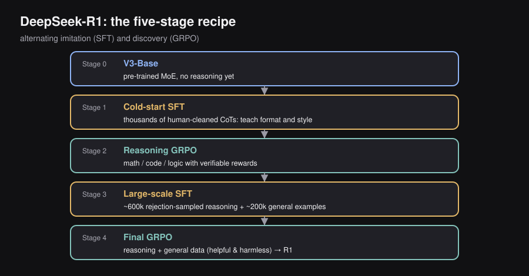
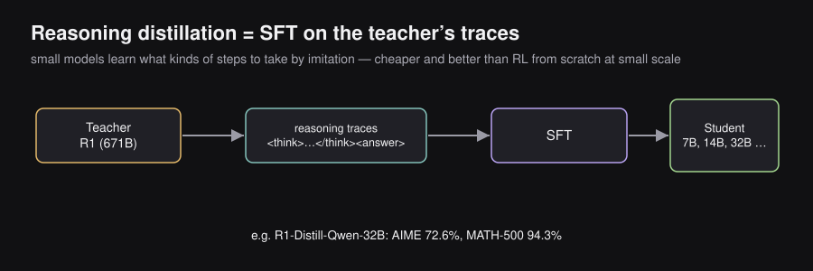

ENGINEERING BLOG / CHAPTER 08 OF 10
Reasoning Models
8.1 — Motivation — Why Vanilla LLMs Struggle
What is a “Vanilla LLM”?
A vanilla LLM is any large language model trained using the standard recipe:
- Pre-training — Learn language patterns from trillions of tokens (next-token prediction).
- SFT (Supervised Fine-Tuning) — Learn to follow instructions on curated Q&A pairs.
- RLHF / Preference Tuning — Align responses with human preferences.
The result: a model that can write essays, debug code, answer factual questions, and hold conversations.
The Four Key Weaknesses
Despite their impressive capabilities, vanilla LLMs have four major weaknesses:
| Weakness | Description | Example |
|---|---|---|
| 1. Limited Reasoning | Struggle with complex multi-step problems | Cannot reliably solve AIME math problems |
| 2. Static Knowledge | Knowledge is frozen at training cutoff | Doesn’t know about events after its data was collected |
| 3. No Actions | Can only generate text, can’t “do” things | Cannot place an online order, run code, browse the web |
| 4. Hard to Evaluate | Free-form outputs resist objective scoring | Hard to use traditional metrics like BLEU/ROUGE |
This chapter focuses on weakness #1: Limited Reasoning.
Why Is Reasoning Hard?
A vanilla LLM is trained with the goal: “predict the most likely next token.” For most questions in its training data, this works well. But for a complex novel problem:
- The exact solution path almost certainly never appeared in training data.
- The model has no mechanism to “work through” a problem — it just predicts tokens that “sound right.”
- It gets the right answer sometimes by luck of pattern matching, but systematically fails on truly hard problems.
Intuition:
Simple question → Answer exists verbatim in training data → LLM can recall it ✓
Hard novel problem → Solution path never seen → LLM generates plausible-sounding nonsense ✗8.2 — What is Reasoning? Definitions and Intuition
A Tentative Definition
There is no universally agreed-upon definition of “reasoning” in AI. The series uses:
Reasoning = The ability to solve a problem that requires a multi-step thinking process.
This is in contrast to knowledge retrieval, where you just recall a fact.
The Spectrum: Knowledge vs. Reasoning
┌───────────────────────────────────────────────────────────────┐
│ KNOWLEDGE REASONING │
│ (Single-step recall) (Multi-step thinking) │
│ │
│ "What is the capital of France?" "If train A departs │
│ → Answer: Paris (direct recall) at 9am going 60mph │
│ and train B departs │
│ "What is the series code for at 10am going 80mph, │
│ the LLMs class?" when do they meet?" │
└───────────────────────────────────────────────────────────────┘Key characteristic of reasoning problems: They have a natural decomposition into smaller, tractable sub-problems. Solving them requires chaining those sub-problem solutions together.
Why Multi-Step Decomposition Helps
Think about how you solved complex problems in school. When you encounter a hard calculus problem:
- You recognize it might involve integration by parts.
- You identify
uanddv. - You compute
duandvseparately. - You plug into the formula.
- You simplify.
Each step is manageable. The complex problem becomes a chain of simple steps.
LLMs can leverage the same structure — if trained to do so.
8.3 — Chain-of-Thought (CoT): The Core Idea
Origin
CoT was introduced in the paper “Chain-of-Thought Prompting Elicits Reasoning in Large Language Models” (Wei et al., 2022). The insight was profound in its simplicity:
If you show the model examples where the answer is preceded by step-by-step reasoning, the model learns to reason before answering.
How CoT Prompting Works
Instead of a bare prompt like:
Q: The bear was born in 2020. How old will it be next year?
A: 5A CoT prompt looks like:
Q: The bear was born in 2020. How old is the bear now?
A: The bear was born in 2020. The current year is 2025. So the bear is 2025 - 2020 = 4 years old.
Q: How old will the bear be next year?
A: It will be one year older than its current age of 4. So 4 + 1 = 5.The few-shot examples show the model the reasoning format, and the model learns to apply this format to new questions.
Why Does CoT Work? Two Levels of Intuition
Intuition 1 — Decomposition: The model can’t solve the hard problem directly, but it CAN solve each sub-step (because those sub-steps appeared in training data). CoT breaks the hard problem into easy sub-problems.
Intuition 2 — More Compute: Every token the model generates costs one forward pass. A longer chain of thought means more forward passes, which means more computation applied to the problem. Giving the model “space to think” is literally giving it more compute budget.
Short answer: [FORWARD PASS 1] → Answer (wrong for hard problem)
Long CoT: [FP1] → Step 1 → [FP2] → Step 2 → [FP3] → Step 3 → [FP4] → Answer (right!)The Scale-Up Idea
Reasoning models take CoT and apply it at much larger scale:
- Not just a few examples in the prompt, but trained into the model weights via RL.
- The reasoning chain can be thousands of tokens long.
- The model learns to reason for any problem, not just the types shown in examples.
8.4 — The Reasoning Model Paradigm
Old Paradigm vs. New Paradigm

OLD PARADIGM (Vanilla LLM)
─────────────────────────────────────────
[Question] ──────► [LLM] ──────► [Answer]
↑
Single forward sequence
NEW PARADIGM (Reasoning Model)
─────────────────────────────────────────
[Question] ──────► [LLM] ──────► [Reasoning Chain]──►[Answer]
↑ ↑
Extended thinking Final output
(can be 1000s tokens)
Output = Reasoning Chain + AnswerThe Template Structure
Reasoning models structure their output with special tags:
<think>
Okay, let me think about this step by step.
The question asks: "The bear was born in 2020. How old will it be next year?"
Step 1: The bear was born in 2020.
Step 2: The current year is 2025.
Step 3: Current age = 2025 - 2020 = 4 years.
Step 4: Next year the bear will be 4 + 1 = 5 years old.
</think>
<answer>
5
</answer>The <think> block is the reasoning chain (often hidden from users or shown as a summary). The <answer> block is what the user typically sees.
Key Observation
The model’s output length has increased dramatically compared to vanilla LLMs. For hard math problems, reasoning chains can span thousands of tokens. This has real-world implications for latency and cost (you’re billed for all output tokens, including thinking tokens).
8.5 — Timeline: The Rise of Reasoning Models
Reasoning models are extremely new — essentially everything dates from 2024–2025.
2024 2025
│ │
│ Sep 12 Dec 19 Jan 20 Feb 19 Feb 24 Jun 10
│ │ │ │ │ │ │
▼ ▼ ▼ ▼ ▼ ▼ ▼
OpenAI Gemini 2.0 DeepSeek Grok 3 Claude 3.7 Magistral
o1-preview Flash Thinking R1 Beta Sonnet
(open-source)
↑ "The Big Bang" ↑
Everyone wondered Major moment:
how OpenAI did it Matched OpenAI's
performance with
a public paper!Why DeepSeek R1 was a watershed moment:
- OpenAI’s o1 was a closed “black box” — no one knew the training method.
- DeepSeek R1 (January 2025) published a detailed paper describing their exact training approach.
- It matched or exceeded o1’s performance on many benchmarks.
- It made reasoning model training accessible to the research community.
8.6 — How to Spot a Reasoning Model in the Wild
UI Indicators
When using ChatGPT, Claude, or Gemini, you can tell if you’re interacting with a reasoning model by looking for:
- “Thinking…” phase — The UI shows the model is spending time thinking before replying.
- Thought summary — A collapsed/expandable box showing a summary of the reasoning (not the raw chain).
- Toggle options — Options like “Standard” vs. “Extended thinking” mode.
Why you see a summary, not the raw chain:
- Raw reasoning chains can be messy, repetitive, or even in fragmented language.
- Users generally don’t want to read thousands of tokens of thinking.
- Companies may want to protect their reasoning approaches.
Pricing Indicators
Every major provider charges for reasoning tokens, even when they’re hidden:
| Provider | What you’re billed for |
|---|---|
| OpenAI | Full thinking tokens (shown in API response metadata) |
| Anthropic | Full thinking tokens (available via API, used in prompt engineering) |
| Thinking tokens included in output token count |
Practical implication: A “5-word answer” from a reasoning model might have cost you 3,000 output tokens (2,995 for thinking + 5 for the answer). Budget accordingly.
8.7 — Reasoning Benchmarks
Why We Need Special Benchmarks
Traditional LLM benchmarks (like MMLU, HellaSwag) test knowledge recall. Reasoning benchmarks test the ability to work through a problem, not just recall the answer.
The key feature of a good reasoning benchmark: automatic verification of correctness.
Coding Benchmarks
Setup:
Problem Statement
│
▼
[LLM] → Generates solution code
│
▼
Test Cases (Unit Tests)
│
Pass/FailThe solution is objectively correct if it passes all test cases. No human judgment needed.
Key benchmarks:
- HumanEval — ~164 human-written coding problems. Classic benchmark.
- CodeForces — Problems from competitive programming. Very hard.
- SWE-bench — Real GitHub issues (bugs, feature requests). Practical difficulty.
Math Benchmarks
Setup:
Math Problem
│
▼
[LLM] → Generates reasoning + final numeric answer
│
▼
Parse answer → Compare to ground truth
│
Correct/IncorrectThe model can be prompted to wrap its answer in a parsable format, e.g., \boxed{42}, making extraction easy.
Key benchmarks:
- AIME — American Invitational Mathematics Examination. Extremely hard (used for US Math Olympiad qualification).
- GSM8K — Grade-school math word problems. More accessible but still tests multi-step reasoning.
- MATH — Competition math at various difficulty levels.
The Common Thread: Verifiable Rewards
Both coding and math benchmarks share a crucial property: you can automatically check if the answer is correct without needing a human or a learned reward model. This is the foundation of the RL approach covered in Section 8.9.
8.8 — Evaluation Metrics: Pass@k, Pass@1, Cons@k
The Problem with a Single Attempt
LLMs are stochastic (random). The same model asked the same question twice might get different answers. How do you measure performance reliably?
One approach: generate multiple attempts and check how often you get a correct one.
Pass@k — The Standard Metric
Pass@k = The probability that at least one of k attempts produces a correct answer.
This captures an important real-world scenario: if you can generate and verify multiple solutions (e.g., run test cases for code), you should measure success at that scale.
Concrete Example
Imagine you’re testing a model on a coding problem:
Generate 5 solutions:
Solution A → Test cases: FAIL ✗
Solution B → Test cases: FAIL ✗
Solution C → Test cases: PASS ✓
Solution D → Test cases: FAIL ✗
Solution E → Test cases: FAIL ✗Pass@5 would be 1 (at least one passed). Pass@1 would be 0.2 (probability any single attempt passes).
The Mathematical Formula

Why not just count?
If we generate exactly k solutions and count how many pass, our estimate is noisy — we might get lucky or unlucky. Instead:
- Generate n total solutions (n >> k).
- Let c be the number of correct ones.
- Estimate the probability that if you randomly select k from these n, at least one is correct.
Step-by-Step Derivation
We want:
Using the complement rule (a classic probability trick):
Now compute using sampling without replacement:
- You have total attempts, of which are wrong.
- Probability first pick is wrong:
- Probability second pick is also wrong (given first was wrong):
- Probability -th pick is also wrong:
Multiplying these together and expressing using the binomial coefficient :
Therefore:
Worked Numerical Example
Let: attempts, correct, so incorrect.
Compute Pass@5:
Interpretation: Even though only 30% of individual attempts are correct, generating 5 solutions gives you an 84% chance of at least one being right.
Special Case: Pass@1
When , the formula simplifies enormously:
Pass@1 is simply accuracy — the fraction of individual attempts that are correct. This is the metric when you can only afford one attempt per problem.
The Role of Temperature
When generating multiple solutions, temperature controls diversity:
Temperature = 0 (deterministic):
All 5 attempts ≡ identical
If the first is wrong, all are wrong
Pass@5 ≈ Pass@1 (diversity = 0)
Temperature = 0.8 (balanced):
Attempts differ in approach and wording
Much higher chance of finding a correct path
Pass@5 >> Pass@1 ✓
Temperature = 1.5 (too random):
Solutions are incoherent/random
Quality degrades significantly
Pass@5 may be low despite diversityRule of thumb: Use a temperature in the range 0.4 – 0.8 for reasoning tasks with multiple attempts. Papers always report the temperature used.
Cons@k (Consensus@k)
Cons@k = Compare the majority-vote answer among k generations to the ground truth.
You generate k solutions, take the most common final answer, and check if it matches the ground truth. This is equivalent to self-consistency prompting from earlier in the series.
| Metric | Use When |
|---|---|
| Pass@1 | Latency matters; only one attempt is feasible |
| Pass@k | Verification is easy (code tests, math check); can afford multiple attempts |
| Cons@k | You want majority robustness; verification is expensive |
8.9 — Scaling Reasoning with Reinforcement Learning
The Core Problem
We want our model to generate a Chain-of-Thought before answering. How do we train this behavior?

Option A: SFT (Supervised Fine-Tuning)
Requires humans to write perfect reasoning chains for thousands of problems.
Problems:
- Extremely expensive and hard. Writing a 2,000-token reasoning chain for an AIME problem requires a math PhD.
- Limits the model’s reasoning style. The model can only reason the way humans wrote it — it cannot discover novel approaches.
- Scale is impossible. You need millions of examples; humans can’t produce them fast enough.
Option B: Reinforcement Learning (RL)
Let the model generate its own reasoning chains and reward it for getting the right answer.
Advantages:
- No human-written chains needed. The model discovers its own reasoning strategies.
- Model can exceed human reasoning. It’s not constrained to mimic human thinking patterns.
- Natural reward signal exists. Math: check if answer matches ground truth. Code: run test cases.
The verdict: Use RL.
The RL Setup for Reasoning

┌────────────────┐
Problem Prompt ────►│ Policy Model │
│ (LLM) │
└────────┬───────┘
│ Generates:
│ <think>...</think><answer>X</answer>
▼
┌────────────────┐
│ Reward Check │
│ (Automatic) │
└────────┬───────┘
│
┌─────────────┴──────────────┐
│ │
Format Reward Accuracy Reward
(Are <think> tags there?) (Is the answer X correct?)
│ │
└─────────────┬──────────────┘
│ Total Reward
▼
┌────────────────┐
│ Policy Update │
│ (GRPO / PPO) │
└────────────────┘What Happens During RL Training?
DeepSeek showed that if you apply this RL setup to a strong base model:
- Performance on AIME improves continuously with more RL steps.
- The model develops increasingly sophisticated reasoning behaviors.
- The reasoning chains get longer and more structured over time.
This phenomenon is called test-time scaling — scaling compute at inference time (via longer reasoning) improves performance, just as scaling training compute or model size does.
8.10 — Rewards for Reasoning: Verifiable Signals
Reward 1: Format Reward
The model must produce output in the correct template format:
<think>
[reasoning chain here]
</think>
<answer>
[final answer here]
</answer>The format reward checks:
- Are the
<think>opening and closing tags present? - Is the
<answer>block present? - Is the structure valid?
If yes → small positive reward. If no → zero or negative reward.
Reward 2: Accuracy Reward
This is the main signal:
| Domain | How to Check | Reward Signal |
|---|---|---|
| Math | Parse <answer> block, compare numerically or symbolically to ground truth |
+1 if correct, 0 if wrong |
| Coding | Compile code, run against all test cases | +1 if all pass, 0 otherwise |
| Logic | Match against a rule-based verifier | +1 if valid, 0 if invalid |
Critical advantage: No learned reward model is needed. The verification is a deterministic program — no risk of reward hacking a neural network.
Total Reward
For DeepSeek R1, they also added:
where penalizes the model for mixing languages in its reasoning chain.
8.11 — Controlling Thinking at Inference Time
The Problem: Not All Prompts Need Deep Thinking
Some problems need extensive reasoning (AIME problems), while others need almost none (“What is 2+2?”). Spending 3,000 tokens thinking about “What is 2+2?” is wasteful and expensive.
Four Approaches to Control Thinking
Dynamic Budget
A lightweight classifier runs on the prompt and estimates the required thinking depth. The model is told how many tokens it can use for thinking.
Example:
- Hard math problem → “You may think for up to 5,000 tokens.”
- Simple factual query → “You may think for up to 100 tokens.”
(Reference: “Token-Budget-Aware LLM Reasoning”, Han et al., 2024)
Context Awareness
The model is aware of the remaining context window size. If it’s been thinking for a long time and context is running low, it knows to wrap up reasoning and produce an answer.
Budget Forcing
Actively inject tokens mid-reasoning to extend or cut thinking:
- Force more thinking: Inject “Wait, let me reconsider…” to push the model to explore more.
- Force stopping: Inject “My final answer is:” to force the model to stop thinking and output an answer.
(Reference: “s1: Simple Test-Time Scaling”, Muennighoff et al., 2025)
Continuous (Latent) Thoughts
A radical idea: what if the “thinking” didn’t happen in token space at all?
Instead of generating readable thinking tokens, the model generates hidden vectors (continuous representations) as its intermediate “thoughts.” These are more compressed and not constrained to human language.
(Reference: “Training Large Language Models to Reason in a Continuous Latent Space”, Hao et al., 2024)
Summary table:
| Method | How it works | Trade-off |
|---|---|---|
| Dynamic Budget | Classify prompt difficulty, set token budget | Needs an accurate classifier |
| Context Awareness | Model monitors remaining context | Might cut thinking too early |
| Budget Forcing | Inject steering tokens | Requires careful tuning |
| Continuous Thoughts | Think in latent space, not tokens | Not human-interpretable; research stage |
8.12 — GRPO: Group Relative Policy Optimization
Why a New RL Algorithm?
PPO (used in RLHF from Chapter 7) requires training a value network (also called a critic or value model). This is a separate neural network — often as large as the policy model — that tries to estimate the expected future reward of any given state.
For a 671B parameter LLM, this means:
- Training 671B + 671B parameters simultaneously = ~1.3 trillion parameters in memory.
- The value network adds instability: it’s hard to train a perfect value estimator.
- Enormous GPU memory requirements.
GRPO’s solution: Eliminate the value network entirely. Instead, compute advantages using group comparisons.
(Reference: “DeepSeekMath: Pushing the Limits of Mathematical Reasoning in Open Language Models”, Shao et al., 2024)
The GRPO Algorithm Step-by-Step
Step 1: Generate a Group of Completions
Given a prompt , generate completions (typically to ):
Prompt q: "Solve: 2x + 5 = 15"
Completion 1 (o₁): "<think>Let me move 5: 2x = 10. Then x = 5.</think><answer>5</answer>"
Completion 2 (o₂): "<think>2x = 15 - 5 = 10, so x = 5.</think><answer>5</answer>"
Completion 3 (o₃): "<think>2x + 5 = 15, so x = 10.</think><answer>10</answer>" [WRONG]
...
Completion G (o_G): "<think>...</think><answer>5</answer>"Step 2: Compute Rewards
For each completion , compute a scalar reward :
r₁ = 1 (Correct: x=5)
r₂ = 1 (Correct: x=5)
r₃ = 0 (Wrong: x=10)
...
r_G = 1 (Correct)Step 3: Compute Group Statistics
Step 4: Compute Advantages (The Key Innovation)
For each completion, compute its advantage as how much better it is compared to the group average:

Worked example with G=4:
| Completion | Reward | |
|---|---|---|
| (Correct) | 1 | +0.58 |
| (Correct) | 1 | +0.58 |
| (Wrong) | 0 | −1.74 |
| (Correct) | 1 | +0.58 |
Group mean , std .
Intuition of advantages:
- Positive : This completion is better than average → increase its probability.
- Negative : This completion is worse than average → decrease its probability.
- The group comparison accounts for problem difficulty automatically: a correct answer to a trivially easy problem (where everyone got it right, ) gets a low positive advantage. A correct answer to an extremely hard problem (where everyone failed, ) gets a high positive advantage.
Step 5: Update the Policy
The GRPO objective function:
Let’s unpack each component:
| Component | Symbol | Meaning |
|---|---|---|
| Policy ratio | How much the model has changed from the previous iteration | |
| Clip | Prevent updates larger than (typically 0.2) | |
| Advantage | Is this token leading toward a good or bad completion? | |
| Min | Take the conservative lower bound of the two terms | |
| KL penalty | Don’t let the model drift too far from the reference (base) model | |
| Outer sum over | Average over all completions in the group | |
| Inner sum over | Average over all tokens in a completion |
The clipping mechanism in plain English:
- If advantage is positive (good completion): we want to increase the probability of these tokens.
- But we cap this at a factor of — don’t increase probability by more than 20%.
- If advantage is negative (bad completion): we want to decrease probability.
- But we floor this at — don’t decrease probability by more than 20%.
This ensures stable, gradual learning — no catastrophic policy jumps.
Visual: GRPO vs PPO Architecture
GRPO:
┌──────────────┐
┌────┤ o₁ │
│ └──────────────┘
┌─────────┐ │ ┌──────────────┐ ┌────────────┐ ┌──────────────┐
q ──► Policy ├──┼────┤ o₂ ├──► Reward ├──► Group ├──► A₁, A₂, ..., A_G
│ Model │ │ └──────────────┘ │ Model │ │ Computation │
└─────────┘ │ ... └────────────┘ └──────────────┘
│ ┌──────────────┐ ↑
└────┤ o_G │ │ KL (vs Reference Model)
└──────────────┘ │
┌──────────────┐
│ Reference │
│ Model │
└──────────────┘
PPO:
┌─────────┐ ┌──────────────┐ ┌────────────┐
q ──► Policy ├────────► o ├──► Reward ├──► r
│ Model │ └──────────────┘ │ Model │
└─────────┘ └────────────┘
│ KL
┌──────────────┐
│ Reference │
│ Model │
└──────────────┘
┌────────────┐ ┌──────────────┐
└──► Value ├──► GAE ├──► A
│ Model │ │ Algorithm │
└────────────┘ └──────────────┘
KEY DIFFERENCE: PPO trains the Value Model; GRPO does NOT8.13 — GRPO vs. PPO: Deep Comparison
PPO in Plain English (Without Prior RL Knowledge)
PPO (Proximal Policy Optimization) is the RL algorithm used in RLHF (Chapter 7). Here’s the intuition without the scary math:
Imagine training a student (the LLM) to solve problems:
- The student attempts a problem and generates an answer.
- You ask a second expert (the Value Network) to guess how good the answer is before you know the actual score.
- You get the actual score (reward).
- You compute the advantage = actual reward − the expert’s guess.
- You update the student based on this advantage.
- To prevent the student from changing too drastically, you clip updates that would change the policy by more than .
The Value Network is trained simultaneously — it needs to learn to predict rewards accurately.
The problem: Training a value network the same size as a 671B-parameter LLM is incredibly expensive.
Head-to-Head Comparison

| Aspect | PPO | GRPO |
|---|---|---|
| Value Network | Required (same size as policy) | Not needed |
| Advantage computation | Reward − Value Network estimate (GAE formula) | (Reward − Group Mean) / Group Std |
| Memory footprint | ~2× the policy model | ~1× the policy model |
| KL divergence placement | Incorporated into reward (per-token penalty) | Explicit term in the objective |
| Sampling | 1 completion per prompt | G completions per prompt |
| Compute per step | Lower (1 completion) | Higher (G completions) |
| Stability | Can be unstable (value errors propagate) | More stable (no value errors) |
| Best for | Subjective tasks (human preferences, RLHF) | Objective tasks (math, code) |
PPO vs. GRPO vs. DPO: When to Use Which
Real-World Analogy — The Cooking School:
Imagine training a chef to cook the perfect dish.
PPO (Proximal Policy Optimization): The chef cooks one dish. A restaurant critic (value network) standing next to them constantly guesses how good the dish will taste while it’s being cooked. The chef adjusts based on the critic’s real-time feedback and the final food-tasting score.
- ✓ Great for nuanced, subjective quality
- ✗ Expensive: need to train and maintain the critic
GRPO (Group Relative Policy Optimization): The chef cooks 8 dishes at once using slightly different recipes. All 8 are tasted and ranked. The chef improves the above-average recipes and stops using below-average techniques. No critic needed.
- ✓ Perfect when there’s a clear right/wrong answer
- ✓ No value network overhead
- ✗ Requires generating multiple completions
DPO (Direct Preference Optimization): Instead of cooking at all, the chef studies a textbook of 1,000 “good dish” vs. “bad dish” comparisons. They directly adjust their recipe knowledge to match the good ones. No trial-and-error cooking.
- ✓ Very cheap to train (no RL loop)
- ✓ Stable and simple
- ✗ Can’t discover recipes better than what’s in the textbook
- ✗ No online exploration
| Scenario | Best Algorithm |
|---|---|
| Math reasoning, coding (verifiable correct/wrong) | GRPO |
| Human preference alignment (subjective quality) | PPO or DPO |
| Fast, cheap alignment with human preferences | DPO |
| Complex multi-step RL with dense rewards | PPO |
Policy: The Core RL Concept in LLMs
What is a policy?
In classical RL, the policy is the agent’s strategy — a mapping from states to actions.
In the LLM context:
- Policy = The LLM itself — specifically, its probability distribution over next tokens.
- Given the context (prompt + tokens generated so far), the policy outputs a probability over every possible next token.
- Taking an action = Sampling the next token from this distribution.
State = [prompt + previously generated tokens]
Action = Next token chosen
Policy = P(next token | all previous tokens)On-Policy vs. Off-Policy:
| Type | Definition | Example | Trade-off |
|---|---|---|---|
| On-Policy | Learn only from data generated by the current model | PPO, GRPO | Stable but expensive (need fresh samples every step) |
| Off-Policy | Learn from data generated by a different or older model | DPO, SFT | Cheap but can lead to distribution mismatch |
8.14 — The “Increasing Output Length” Problem
The Observation
A curious phenomenon emerges during GRPO training: response length keeps increasing over RL steps, even after performance has plateaued.
Performance: ▲▲▲▲▲▲▲▲▲▲▲▲▲▲▲━━━━━━━━━━━━ (stabilizes)
Steps →
Output Length: ▲▲▲▲▲▲▲▲▲▲▲▲▲▲▲▲▲▲▲▲▲▲▲▲▲▲ (keeps growing!)
Steps →From DeepSeek-R1-Zero’s training data:
- At step 0: ~200 tokens per response
- At step 8000: ~10,000 tokens per response
The first portion of this growth is good — longer reasoning means better performance. But the later portion is wasteful: the model generates more and more tokens without improving accuracy.
Root Cause: Length Bias in the GRPO Loss
Look carefully at the GRPO objective’s inner sum:
The factor divides each token’s contribution by the output length .
What this means:
- A token in a short output (): its contribution is .
- A token in a long output (): its contribution is .
Consequences when the advantage is negative (wrong answer):
| Output Type | Advantage | Contribution to Loss | Effect |
|---|---|---|---|
| Short wrong answer | Negative (−1.74) | Large magnitude | Model is strongly penalized |
| Long wrong answer | Negative (−1.74) | Small magnitude | Model is weakly penalized |
The bad incentive: The model learns that long wrong answers are penalized less than short wrong answers. Therefore, when the model generates a wrong answer, it learns to pad it with more tokens to reduce its penalty.
Over thousands of RL steps, this small bias accumulates: incorrect outputs become systematically longer and longer.
Visual Intuition
Imagine grades in a class:
Short wrong answer: −10 points (big penalty)
Long wrong answer: −0.1 points (tiny penalty)
A rational student would learn: "When I'm wrong, write more!"
The model learns the same thing → length inflation.8.15 — Fixes: DAPO and Dr. GRPO
The Core Problem to Fix
The length normalization gives tokens in short outputs more weight than tokens in long outputs, creating length bias.
Fix 1: DAPO (Decoupled Clip and Dynamic Sampling Policy Optimization)
(Reference: “DAPO: An Open-Source LLM Reinforcement Learning System at Scale”, Yu et al., 2025)
DAPO replaces per-sequence normalization with a global normalization across all tokens in the batch:
Standard GRPO (per-sequence):
DAPO (token-level normalization):
Now every token in the batch contributes equally, regardless of which output it came from. Short and long outputs are treated fairly.
Additional DAPO innovations:
- Clip-Higher: Asymmetric clipping with . Low-probability tokens need more room to grow (otherwise the model can’t explore new behaviors).
- Entropy Bonus: Encourages diversity by adding an entropy reward, preventing mode collapse.
- Dynamic Sampling: Skip prompts where all G completions are correct or all are wrong (no learning signal).
Fix 2: Dr. GRPO (Removing Length Bias)
(Reference: “Understanding R1-Zero-Like Training: A Critical Perspective”, Liu et al., 2025)
An even simpler fix: remove the factor entirely. The advantage is computed at the completion level, not the token level.
Effect:
Standard GRPO: Incorrect responses grow longer over training
Dr. GRPO: Incorrect responses stay short (correct ones grow normally)
[Length vs. RL steps]
Correct outputs: same trend in both
Incorrect outputs: GRPO → keep growing
Dr. GRPO → stay controlled ✓Summary
| Method | What it changes | Key effect |
|---|---|---|
| GRPO (original) | per-sequence normalization | Length of wrong answers keeps growing |
| DAPO | Token-level normalization + asymmetric clipping + entropy | Length stabilizes; better diversity |
| Dr. GRPO | Remove length scaling factor entirely | Length of incorrect responses controlled |
8.16 — Applications: The DeepSeek R1 Pipeline
DeepSeek’s R1 paper is the most detailed publicly available description of how to train a state-of-the-art reasoning model. The pipeline has two sub-stories: a proof-of-concept (R1-Zero) and the full production pipeline (R1).
R1-Zero: The Proof of Concept (Pure RL)
Question: Can RL alone (without any reasoning-specific SFT data) teach a model to reason?
Experiment:
Start from the DeepSeek-V3 base model (~671B parameters, MoE architecture, pre-trained on next-token prediction only).
Apply GRPO directly, with only formatting + accuracy rewards.
The prompt template:
A conversation between User and Assistant. The assistant first thinks about the reasoning process in the mind and then provides the user with the answer. The reasoning process and answer are enclosed within <think> </think> and <answer> </answer> tags, respectively. User: [QUESTION] Assistant:
Results:
- AIME accuracy went from ~15% → ~71% (pass@1), ~87% (cons@64).
- The model spontaneously developed sophisticated reasoning behaviors: backtracking, self-correction, exploring alternative paths — all without being explicitly taught.
Problems with R1-Zero:
- Reasoning chains sometimes mix languages (Chinese + English + symbols).
- Formatting is inconsistent — sometimes the model doesn’t use the correct tags.
- Readability is poor — the chains can be hard to follow.
Conclusion of R1-Zero: RL alone is sufficient to teach reasoning ability. But it needs refinement for practical use.
The Full R1 Pipeline: A 5-Stage Recipe

┌─────────────────────────────────────────────────────────────────────┐
│ DeepSeek R1 Training Pipeline │
│ │
│ Stage 0 Stage 1 Stage 2 Stage 3 │
│ ┌───────┐ ┌───────────┐ ┌───────────┐ ┌───────────┐ │
│ │ V3 │────►│ Cold-Start│───►│ Reasoning │───►│ Large- │ │
│ │ Base │ │ SFT │ │ GRPO │ │ Scale SFT │ │
│ └───────┘ └───────────┘ └───────────┘ └───────────┘ │
│ │ │
│ Stage 4 │
│ ┌───────────┐ │
│ │ Final │ │
│ │ GRPO → R1 │ │
│ └───────────┘ │
└─────────────────────────────────────────────────────────────────────┘Stage 0: The Base Model (V3-Base)
DeepSeek-V3 is a ~671B parameter Mixture-of-Experts (MoE) model:
- Only ~37B parameters are “active” for any given token (experts are selected).
- Pre-trained on trillions of tokens using standard next-token prediction.
- Uses Multi-Latent Attention (MLA) for KV-cache efficiency.
- At this stage: knows language and code, but only “autocompletes” — no reasoning behavior.
Stage 1: Cold-Start SFT (Small-Scale, Human-Refined)
Why: If we jump straight to GRPO from the base model, we get R1-Zero’s problems (mixed languages, poor formatting). We need a “style foundation.”
What: SFT on a small dataset of high-quality reasoning examples.
- Generated initial CoTs from R1-Zero (which, despite being messy, does get correct answers).
- Human annotators rewrote these CoTs to fix: language mixing, formatting errors, readability.
- Scale: small (thousands to tens of thousands of examples).
What SFT Does Here: It teaches the model the format and style of good reasoning, not the substance. It says: “When you reason, use clean English, use <think> tags, be structured.”
Analogy: Before training a student to solve math competition problems, you first teach them how to write their work neatly, show their steps, and use standard notation. You don’t teach them competition math yet — just the style.
Stage 2: Reasoning RL (GRPO on Reasoning Data)
What: Apply GRPO using the formatted base from Stage 1.
- Dataset: Math, coding, and logic problems (with verifiable answers).
- Reward: Format + Accuracy + Language Consistency.
- This stage runs for many thousands of RL steps.
What GRPO Does Here: It teaches the model how to think — the substance of reasoning. The model freely explores reasoning strategies, discovers novel approaches, and gets rewarded for being correct.
Analogy: After learning proper notation (Stage 1), the student now spends months practicing competition math problems. They try different strategies, see which work, and gradually get better.
Outcome: The model becomes extremely good at reasoning, but may still be a bit “rough around the edges” as an assistant.
Stage 3: Large-Scale SFT (Rejection Sampling + Supervised Training)
Why: Stage 2’s model is excellent at reasoning but might not be the best general assistant. We want to consolidate its skills into high-quality data.
What:
- Generate 600k+ reasoning examples using the Stage 2 model:
- Give it reasoning problems (math, coding, logic).
- Run it many times to get diverse solutions.
- Rejection sampling — keep only the perfect solutions:
- Math: Did the final answer match the ground truth exactly?
- Code: Did it pass all test cases?
- Bad answers are discarded.
- Mix in 200k non-reasoning examples (general Q&A, writing, factual queries) — mostly reused from DeepSeek-V3’s SFT data.
- Run SFT on this combined 800k+ dataset.
What SFT Does Here: It consolidates and refines the reasoning abilities discovered in Stage 2, while ensuring the model remains a broadly capable assistant.
Why rejection sampling? You want only perfect examples in the training data. By generating many solutions and filtering, you create a high-quality dataset without expensive human annotation.
Analogy: After months of practice, the student collects their best solutions to 600k problems (keeping only the correct ones) and reviews them systematically. This “solidifies” their skills.
Stage 4: Final GRPO (Mixed Reasoning + General Alignment)
Why: Stage 3 made the model excellent at reasoning and conversational tasks. But we need to run one more RL stage to fine-tune the balance and ensure safety.
What: Apply GRPO with two types of data simultaneously:
| Data Type | Problems | Reward Signal |
|---|---|---|
| Reasoning data | Math, coding, logic | Formatting + Accuracy |
| General chatbot data | Open-ended Q&A, writing, factual questions | Helpfulness + Harmlessness |
For general data: A learned reward model (like in RLHF) scores the helpfulness and safety of outputs. The harmlessness reward applies to the entire output, including the <think> section (the model must not have harmful thoughts, not just harmful answers).
Outcome: DeepSeek-R1 — a model that is both a state-of-the-art reasoner and a polished, safe assistant.
R1 Results
On reasoning benchmarks, R1 achieved:
- Performance comparable to or exceeding OpenAI o1 on AIME, MATH, and coding benchmarks.
- Strong performance on general benchmarks (not just reasoning tasks).
Two clusters emerge in results:
- Non-reasoning models: lower performance tier.
- Reasoning models: significantly higher performance tier.
R1 sits firmly in the reasoning model cluster, matching closed-source alternatives.
Key Design Decisions Summary
| Stage | Method | Purpose |
|---|---|---|
| Stage 1: Cold-Start SFT | SFT on ~thousands of human-cleaned CoTs | Establish formatting and style |
| Stage 2: Reasoning RL | GRPO on reasoning data | Develop deep reasoning capability |
| Stage 3: Large-Scale SFT | SFT on 800k filtered samples | Consolidate and polish reasoning |
| Stage 4: Final RL | GRPO on reasoning + general data | Align as a full assistant (helpful + safe) |
The key insight: SFT and GRPO play complementary roles:
- SFT = “imitation learning” (learn from examples).
- GRPO = “discovery learning” (trial and error, reward-driven exploration).
You need both: SFT for foundation and consolidation, GRPO for breakthrough capability and alignment.
8.17 — Knowledge Distillation for Reasoning
The Problem
Not everyone has a 671B parameter model. Most practitioners work with 7B, 13B, or 70B models. Can smaller models also reason?
Classical Distillation (Recap from Chapter 4)
In classical knowledge distillation:
- Teacher: Large, powerful model.
- Student: Smaller, cheaper model.
- Goal: Match the teacher’s token probability distribution on each next token.
Instead of learning from hard labels (the correct next token), the student learns from soft labels (the teacher’s full probability distribution over the vocabulary). This transfers more nuanced knowledge.
Reasoning Distillation: A Different Flavor
For reasoning models, we can’t directly match probability distributions on reasoning chains (the teacher might not even have the same vocabulary or architecture). Instead:

Step 1: Use the teacher (R1) to generate complete reasoning traces for thousands of problems:
Problem: "Solve: x² + 5x + 6 = 0"
Teacher output: "<think>I need to factor: (x+2)(x+3).
So x = -2 or x = -3.</think>
<answer>x = -2 or x = -3</answer>"Step 2: Use these teacher-generated traces as SFT data to train the student.
Instead of predicting the next token from scratch, the student is trained to reproduce the entire teacher trace (including the <think> section).
Teacher (R1, 671B) → Generates reasoning traces → Training data
↓
Student SFT (7B, 14B, etc.)
Learns to mimic the tracesWhy is This Effective?
- The teacher’s reasoning traces contain structured thinking patterns that are hard to discover from scratch (especially for small models).
- Small models can learn what kinds of steps to take by imitating, even if they can’t discover these patterns via RL.
- This is far more compute-efficient than running full RL on a small model.
Distillation vs. RL from Scratch for Small Models
| Method | Small Model (7B) Performance | Compute Cost |
|---|---|---|
| RL from scratch (GRPO) | Lower (small models can’t fully explore) | Very high |
| Distillation from R1 | Higher (benefits from teacher’s expertise) | Much lower |
Key finding from the DeepSeek paper: At small scales, distillation consistently outperforms RL training from scratch. The reasoning patterns in the teacher’s data are “stronger” than what a small model can discover independently.
Results from DeepSeek Distilled Models
Models were distilled from R1 into Qwen and Llama base models:
| Model | Parameters | AIME 2024 | MATH-500 |
|---|---|---|---|
| DeepSeek-R1-Distill-Qwen-32B | 32B | 72.6% | 94.3% |
| DeepSeek-R1-Distill-Qwen-14B | 14B | 69.7% | 93.9% |
| DeepSeek-R1-Distill-Qwen-7B | 7B | 55.5% | 92.8% |
| DeepSeek-R1-Distill-Llama-8B | 8B | 50.4% | 89.1% |
For context: OpenAI o1-mini (a small reasoning model from OpenAI) scored ~50–56% on AIME. The 7B–8B distilled models are competitive, despite being far smaller than any frontier model.
8.18 — Connecting Everything: The Grand Story
The Detective Analogy
Imagine you’re training a world-class detective (the LLM) to solve complex mysteries.
Chapter 1 — The Rookie Detective (Pre-training): The detective reads millions of case files, crime novels, legal textbooks, and forensic manuals. They absorb vast knowledge but haven’t solved any cases themselves. They know what detectives are “supposed to say” but haven’t developed genuine deductive skill.
Chapter 2 — The Training Manual (Cold-Start SFT): A senior detective hands the rookie a small collection of meticulously solved cases — each with beautifully written reasoning chains showing exactly how the solution was reached. The rookie studies these, learning: how to structure their thoughts, how to present reasoning, when to say “Wait, let me reconsider.” They don’t yet know HOW to solve cases independently — they just know what good detective work looks like.
Chapter 3 — The Casework (Reasoning GRPO): Now the rookie is given thousands of real unsolved cases. After each attempt, they’re told: “Correct — the culprit was found” or “Wrong — the culprit escaped.” No hints, just results. Over thousands of cases, the detective develops genuine deductive skill — learning to notice clues, build hypotheses, backtrack when wrong. They discover strategies no textbook ever described.
Chapter 4 — The Masterclass Review (Large-Scale SFT): The now-skilled detective reviews 600,000 of their best solved cases, carefully filtering to keep only the perfectly resolved ones. They study these intensively. This refines their technique, removes idiosyncratic errors, and consolidates the brilliant strategies they discovered into reliable habits.
Chapter 5 — The Full Career (Final GRPO): The detective now handles all kinds of cases — complex murder mysteries (reasoning tasks) and everyday investigations (general queries). They’re evaluated on accuracy, on whether they harmed innocent people (safety), and on whether clients found their explanations helpful. They become a complete, trustworthy professional.
Chapter 6 — Teaching New Detectives (Distillation): The master detective’s casebooks become training material for rookie detectives at smaller agencies. They can’t replicate all the master’s experience, but by studying the detailed case files, even junior detectives quickly develop strong investigative instincts.
This is exactly the DeepSeek R1 training pipeline.
8.19 — Cheat Sheet
Core Concepts
| Concept | One-Line Definition |
|---|---|
| Reasoning Model | LLM that generates a thinking chain before answering |
| Chain-of-Thought (CoT) | Technique of generating step-by-step reasoning before the final answer |
| Test-Time Scaling | Improving performance by giving the model more compute at inference (longer thinking) |
| Verifiable Reward | A reward that can be checked deterministically (math: correct answer; code: passes tests) |
| Policy (in LLMs) | The LLM itself — its probability distribution over next tokens |
| Advantage | How much better a completion is compared to the baseline/average |
GRPO Quick Reference
| Formula | Meaning |
|---|---|
| Advantage = normalized deviation from group mean | |
| How much the policy changed from previous iteration | |
| Prevent updates larger than | |
| Penalty for drifting from base model |
Pass@k Quick Reference
- = total attempts generated
- = number of correct attempts
- = number of attempts selected
- Pass@1 = (just accuracy)
Temperature Guide
| Temperature | Diversity | Quality | Use Case |
|---|---|---|---|
| Low | High | Single-shot generation | |
| Balanced | Good | Multiple-attempt Pass@k | |
| High | Degraded | Creative tasks only |
DeepSeek R1 Pipeline at a Glance
| Stage | Method | Data Size | Purpose |
|---|---|---|---|
| 0 | Pre-training | Trillions of tokens | Raw language knowledge |
| 1 | Cold-Start SFT | Thousands (human-cleaned) | Establish reasoning format |
| 2 | Reasoning GRPO | Math/code problems | Develop reasoning ability |
| 3 | Large-Scale SFT | ~800k filtered pairs | Consolidate and refine |
| 4 | Final GRPO | Reasoning + general | Alignment and polish |
Algorithm Comparison Cheatsheet
| PPO | GRPO | DPO | |
|---|---|---|---|
| Value Network? | Yes | No | No |
| Online (RL loop)? | Yes | Yes | No |
| Best reward type | Subjective | Verifiable | Preference pairs |
| Memory cost | ~2× model | ~1× model | ~1× model |
| Main use | RLHF | Reasoning training | Fast preference alignment |
8.20 — Glossary
| Term | Definition |
|---|---|
| Advantage () | How much better a completion is relative to a baseline (group mean in GRPO, value estimate in PPO) |
| Accuracy Reward | A reward signal based on whether the final answer is objectively correct |
| AIME | American Invitational Mathematics Examination — a hard math benchmark widely used for reasoning models |
| Budget Forcing | Technique to control reasoning length by injecting tokens mid-generation to extend or stop thinking |
| Chain-of-Thought (CoT) | A reasoning technique where the model generates step-by-step reasoning before the final answer |
| Clipping | In PPO/GRPO, limiting policy updates to the range to ensure stable training |
| Cold-Start SFT | A small-scale supervised fine-tuning step using human-cleaned reasoning examples, done before RL |
| Cons@k (Consensus@k) | Metric comparing the most common answer among k generations to the ground truth |
| DAPO | Decoupled clip and Dynamic sampling policy Optimization — GRPO variant with token-level normalization |
| DeepSeek R1 | A state-of-the-art open-weight reasoning model from DeepSeek, trained using the 5-stage pipeline described in this chapter |
| DeepSeek R1-Zero | R1’s proof-of-concept trained with pure RL (no cold-start SFT), showing RL alone can teach reasoning |
| Distillation | Training a smaller (student) model to mimic the behavior of a larger (teacher) model |
| Dr. GRPO | GRPO variant that removes per-sequence length normalization to fix length bias |
| Format Reward | A reward for correctly using structural templates (e.g., proper <think> tags) |
| GAE (Generalized Advantage Estimation) | Complex formula used in PPO to estimate advantages from reward and value function |
| GRPO | Group Relative Policy Optimization — RL algorithm that eliminates the value network; uses group comparisons for advantages |
| GSM8K | Grade School Math 8K — a benchmark of grade-school math word problems |
| HumanEval | A benchmark of ~164 human-written coding problems |
| KL Divergence | A measure of difference between two probability distributions; used as a penalty in RL to prevent the policy from drifting too far from the reference model |
| MoE (Mixture of Experts) | Architecture where only a subset of parameters are active for each token |
| Pass@1 | Special case of Pass@k with k=1; equivalent to accuracy (c/n) |
| Pass@k | Probability that at least one of k attempts succeeds; formula: |
| Policy () | In LLMs: the model’s probability distribution over next tokens; the LLM itself acting as an RL agent |
| PPO | Proximal Policy Optimization — RL algorithm used in RLHF; requires a value network |
| Reasoning Model | An LLM that generates a chain-of-thought before the final answer to improve performance on complex tasks |
| Reference Model | The fixed model (usually the SFT model) against which KL divergence is measured during RL training |
| Rejection Sampling | Generating many candidate outputs and keeping only those that meet a quality criterion (e.g., correct answer) |
| RLHF | Reinforcement Learning from Human Feedback — the framework from Chapter 7 for aligning LLMs with human preferences |
| SFT (Supervised Fine-Tuning) | Training on (input, output) pairs with cross-entropy loss; “imitation learning” |
| SWE-bench | A benchmark of software engineering tasks derived from real GitHub issues |
| Temperature | Sampling parameter that controls diversity of generated text; higher = more random |
| Test-Time Scaling | Improving model performance by increasing compute used at inference (longer reasoning chains) |
| Value Network (Critic) | In PPO: a neural network trained to predict expected future rewards from any given state |
| Verifiable Reward | A reward that can be checked by a deterministic program (not a learned model) |